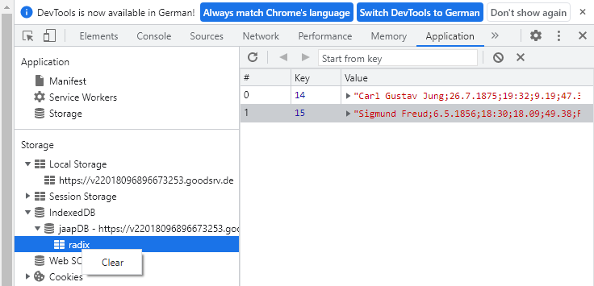

Neu in der Version 0.0.35
Neu in der Version 0.0.34
Neu in der Version 0.0.33
Anleitung zur Benutzung
Heimatstandort setzen
Horoskop Speichern/Laden – AAF Import/Export
Daten löschen
Tastatur Kürzel (shortcuts)
Beim starten des Programms wird das aktuelle Horoskop angezeigt. Oben ist die Menue und Statusleiste, links sind die Tabellen für die Planeten und die Häuser, darunter die Elemente (F)euer, (E)rde, (L)uft, (W)asser und die Qualitäten (K)ardinal, (F)ix, (V)eränderlich. In der Mitte ist die Horoskop Grafik und rechts die Tabelle mit den Aspekten.
Wenn du mit der Maus auf einen Planeten in der Grafik zeigst, wird rechts oben in der Menue und Statusleiste der Name und das Haus dieses Planeten angezeigt. Ein Klick auf den Planeten setzt einen Filter und es werden nur noch die Aspekte dieses Planeten angezeigt. Ein Klick in auf eine freie Fläche in der Mitte der Grafik löscht den Filter und es werden wieder alle Aspekte angezeigt.
In Menue und Statusleiste kannst du einen Offset einstellen z.B. 1 Tag. Mit den »+« und »–« Buttons kannst du in diesem Schritt in der Zeit vor oder zurück springen. Das Gleiche geht auch mit den Tasten [Bild auf] und [Bild ab] oder [+] und [–] Auf den Tasten [1] - [0] sind bereits gängige Zeiträume hinterlegt, welche mit einem Tastendruck einstellbar sind. Mit einem Klick auf den »!« Button oder mit der taste [pos1] wird die Zeit wieder auf die aktuelle zurückgesetzt.
Jaap ist auf eine möglichst effiziente Bedienung ausgelegt. Ich habe darauf geachtet, dass für alle wichtigen Funktionen nur ein Mausklick bzw. Tastendruck erforderlich ist. Weiter unten gibt es eine Beschreibung aller Tastatur shortcuts.
Mit einem Klick auf den Button »N« öffnet sich eine Eingabe Maske für ein neues Radix. Bitte hier einen Namen, das Datum, die Uhrzeit im Format Stunde:Minute und den Ort eintragen. Ein Klick auf »suchen« liefert eine Ergebnis liste. Durch anklicken des gewünschten Ortes werden dessen Koordinaten übernommen. Wenn die Urzeit nicht bekannt ist, das Feld leer lassen, dann wird die Grafik ohne Häuser dargestellt. Wenn das Datum v. Chr sein soll, die Checkbox »bc« auswählen. Mit »OK« abschließen und das Radix wird angezeigt. Im Radix kannst du auch Filter durch anklicken eines Planeten setzen.
Ein Klick auf den Button »T« blendet das Transit Horoskop ein. Hier ist innen das Radix und aussen das aktuelle Horoskop zu sehen. Jetzt ist auch die Zeit Navigation wieder verfügbar und du kannst im aktuellen Horoskop in der Zeit vor oder zurück springen um den Verlauf eines Transits zu beobachten. Im Transit Modus werden nicht mehr die Radix Aspekte, sondern die Transit Aspekte angezeigt. Mit einem Klick auf »R« wechselst du wieder zu dem radix Horoskop zurück. Dies geht auch mit den Tasten [T] und [R].
Hinweis: Derzeit wird noch keine Überprüfung der Daten durchgeführt. D.h. Horoskope, welche doppelt abgespeichert oder importiert werden, sind dann auch doppelt in der Datenbank. Fehlerhaft abgespeicherte Horoskope können aber wieder gelöscht werden.
Das AAF Format wird auch von vielen anderen Astrologie Programmen unterstützt. Deshalb kannst du die exportierten Horoskope auch in andere Programme importieren oder von dort exportierte Horoskope in Jaap importieren.| Taste | Funktion |
|---|---|
| [esc] | Alle Aspekte anzeigen (Filter löschen) |
| [N] | Neues Horoskop eingeben |
| [L] | Horoskop aus der Datenbank laden |
| [1] | Zeitintervall auf 1 Minute stellen |
| [2] | Zeitintervall auf 10 Minuten stellen |
| [3] | Zeitintervall auf 1 Stunde stellen |
| [4] | Zeitintervall auf 1 Tag stellen |
| [5] | Zeitintervall auf 1 Woche stellen |
| [6] | Zeitintervall auf 1 Monat stellen |
| [7] | Zeitintervall auf 1 Jahr stellen |
| [8] | Zeitintervall auf 5 Jahre stellen |
| [9] | Zeitintervall auf 10 Jahre stellen |
| [0] | Zeitintervall auf 100 Jahre stellen |
| [T] | Das Transit Horoskop anzeigen (geht nur im Radix Modus) |
| [R] | Das Radix Horoskop anzeigen (geht nur im Transit Modus) |
| [Bild ab] | In der Zeit vor springen |
| [Bild auf] | In der Zeit zurück springen |
| [+] | In der Zeit vor springen |
| [–] | In der Zeit zurück springen |
| [pos1] | Aktuelles Horoskop anzeigen |
Wenn du die Daten wieder löschen möchtest, kannst du dies folgendermassen tun:
Am einfachsten geht es mit der jaap internen Funktion. Diese kann derzeit nur eine vollständige Löschung aller von jaap gespeicherten
Daten durchführen. Dazu auf das menue ☰ klicken und dann auf 💣 Löschen…
Die Rückfrage bestätigen und die Daten werden gelöscht. Wenn eine Meldung erscheint, dass die Datenbank blockiert ist, bitte die Seite
einmal neu laden, dann sollte es funktionieren.
Löschen mit der Browser internen Funktion:
Wenn die Webseite von Jaap der aktive Tab ist, dann drücke gleichzeitig die Tasten [shift][strg][I]
Bei manchen Browsern funktioniert auch [F12]. Es öffnen sich die Entwicklertools. Wenn du Chrome, Chromium oder einen auf Chromium
basierenden Browser hast (z.B. Edge, Opera, Vivaldi, Brave) dann heisst der Tab »Application« oder »App« oder »Anwendung«. Im Firefox heisst der
Tab »Web-Speicher«. Diesen Tab auswählen (wenn er nicht sichtbar ist dann rechts auf den "≫" Button klicken um noch weitere
Tabs einzublenden). Dann ist es links die Kategorie »Storage« oder »Speicher«. Dann »Local Storage« bzw. »Lokaler Speicher«
aufklappen. Mit rechtsklick auf die Domain und dann »clear« bzw. »löschen« oder »alles löschen«.
Das gleiche kannst du auch mit den Einträgen der IndexedDB machen. Aufklappen bis zum Folder »radix« und dann rechte Maustaste »clear« bzw. »löschen« oder »alles löschen«. Du kannst auch einzelne Einträge löschen, indem du einen rechtsklick auf den entsprechenden Eintrag machst.
